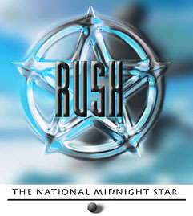
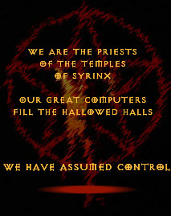

|
A LIVING TRIBUTE TO THE WORLDS #1 RUSH SITE OF ALL TIME |
The Band The Albums The Rush FAQ The Discography Credits Rush News & Information Tourbooks Venues
Collector's Corner
By The Fans
Images
Transcriptions
Multimedia |
HOW IT ENDED "I ran TNMS for upwards of 6 years, and at the end I could see it was dying. The last straw for me was not some symphonic hoax album (I actually had completely forgotten about it until you mentioned it), it was the way people were behaving in the mailing list. At one time, the list was like a little community, friends where we could have discussions away from the usenet newsgroups and flamewars that were and still are so common. "In the end, it was better to just let it die. I was just too sick of the flamewars, people arguing why their posts shouldn't've been removed or edited, the same old discussions time after time... I do apologize for not sending out a final letter, but the past year has been rather hideous in the real life department and I just didn't have the time or energy or willingness to deal with all the responses I'm sure I would've gotten from it. "So yes, the list is dead, the website is dead (though it may be resurrected at some point in the future). Those of you who participated in The National Midnight Star will have to remember how it was, not how it ended..." -meg (the entity formerly known as the rush-mgr) got milk? |
Thanks to everyone for making this a great holiday season! If you want to
check out details on the results, visit AAR's website at: www.vrx.net/aar (click on the "auction results" link
at the top of their page) |
|
 |
 |
*Copyright ©
1995 1996 1997 1998 1999 2000 Anthem Entertainment
*All Rights Reserved
*For Educational & Private Use Only
*It is Strictly Prohibited to Redistribute, Duplicate or Profit From The Content
Found Herein
{kind=link}